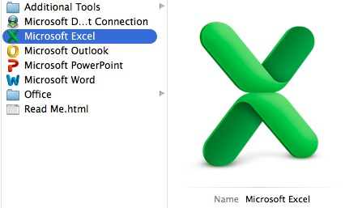
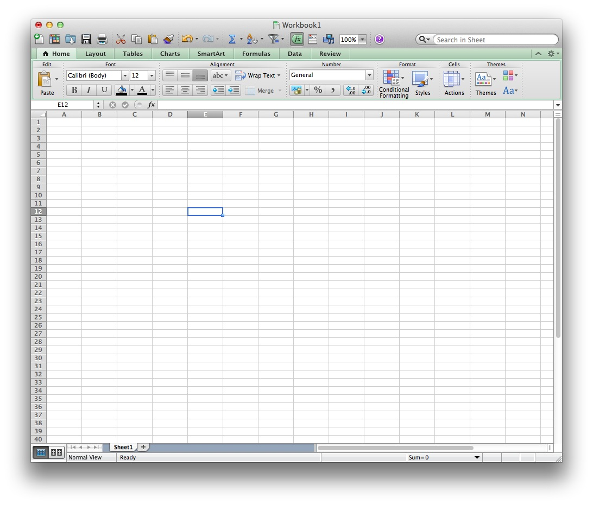
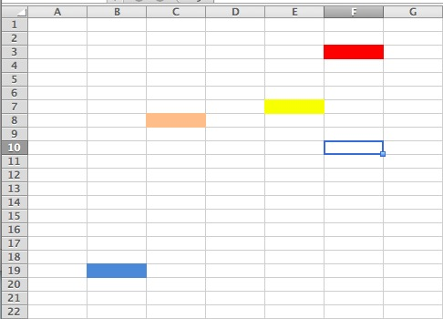

Project Intro
For this unit, we are going to learn about Spreadsheets. Spreadsheets are like lists that make it very easy to look at a lot of information at once. It is very good to make a spreadsheet for anything that should be in a list, such as your friends phone numbers, movies you want to see, things you need to do, or anything else that you can think of. We make Spreadsheets using Microsoft Excel.
Teaching Point:
Today we will learn what a cell is in Microsoft Excel.
Cells in a Spreadsheet
When you look at a Spreadsheet, you will see a page that's made up of many, many boxes. Each of these boxes is a cell. When you are writing in Microsoft Word, you just write on the page, but when you are making a list in a spreadsheet, you are writing into one of the little cells or boxes on the page.
With so many little boxes, it can be hard to tell one box from another. When you want to point out one box, you tell which box it is by looking at what Row it's in, and what Column. Each Row has a number, and each Column has a letter. So if a cell is in Row 8, Column C, you say look at cell 8C. If it is in the 2nd row and column X, you say look at cell 2X.
Today's Assignment
Use the sample file and the gingerbread house worksheet to color in the right cells to make a gingerbread house picture.
Back to School Portal